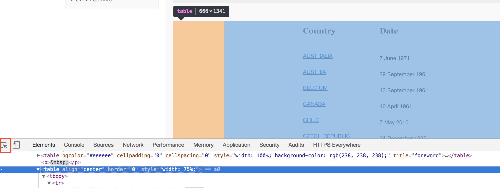
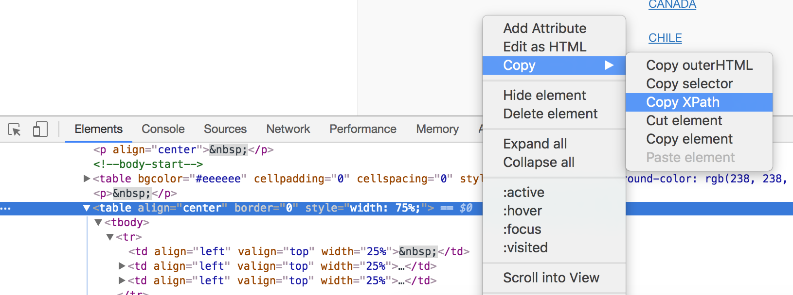
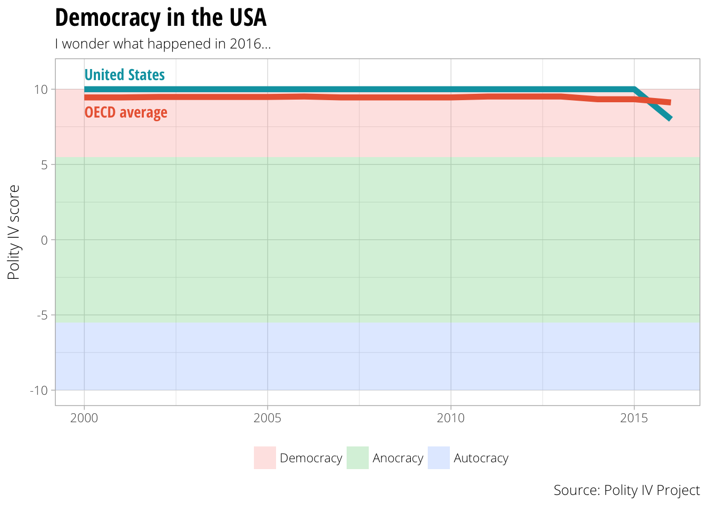

Quickly play with Polity IV and OECD data (and see the danger of US democracy)
The Polity IV Project released new data yesterday, with democratization scores for 169 countries up to 2016. I wanted to check if the ongoing erosion of US democratic institutions since the 2016 elections registered in the US’s Polity score, and, lo and behold, it did! We dropped from our solid, historically consistent 10 to an 8.
But is that bad? How does that compare to other advanced democracies, like countries in the OECD?
What follows below shows how relatively easy it is to quickly and reproducibly grab the new data, graph it, and compare scores across countries. (This notebook is also in a GitHub repository.)
Before we start, we’ll load all the libraries we’ll need:
library(tidyverse) # dplyr, ggplot, etc.
library(readxl) # Read Excel files
library(forcats) # Deal with factors
library(countrycode) # Deal with country codes and names
library(rvest) # Scrape websites
library(httr) # Download stuff
library(ggrepel) # Place non-overlapping labels on plots
First, we have to download the new Polity data. We could navigate to the Polity IV data page and download the data manually, but that’s not scriptable. Instead, we can use GET() from the httr package (or httr::GET() for short) to download the file directly rather than hunting it down with a browser. After saving the Excel file to a temporary file, we use readxl::read_excel() to load and parse the data. The chain of functions following read_excel() (chained together with dplyr’s %>% pipes) selects and renames the Correlates of War country code, year, and polity score; ensures that those columns are integers (rather than text or decimal-based numbers); and finally filters the data to 2001 and beyond.
polity.url <- "http://www.systemicpeace.org/inscr/p4v2016.xls"
# Download Polity data to temporary file
GET(polity.url, write_disk(polity.temp <- tempfile(fileext = ".xls")))
## Response [http://www.systemicpeace.org/inscr/p4v2016.xls]
## Date: 2017-08-27 01:23
## Status: 200
## Content-Type: application/vnd.ms-excel
## Size: 4.29 MB
## <ON DISK> /var/folders/0h/6jl6g9317lv3k5w9h72m18kw0000gn/T//Rtmp0TEhay/file125c8561fd799.xls
# Read and clean Polity data
polity <- read_excel(polity.temp) %>%
select(cowcode = ccode, year, polity = polity2) %>%
mutate_at(vars(year, cowcode, polity),
funs(as.integer)) %>%
filter(year >= 2000)
polity %>% glimpse()
## Observations: 2,814
## Variables: 3
## $ cowcode <int> 700, 700, 700, 700, 700, 700, 700, 700, 700, 700, 700, 700, 700, 700, 700, 700, 700, 339, 339, 339,...
## $ year <int> 2000, 2001, 2002, 2003, 2004, 2005, 2006, 2007, 2008, 2009, 2010, 2011, 2012, 2013, 2014, 2015, 201...
## $ polity <int> -7, NA, NA, NA, NA, NA, NA, NA, NA, NA, NA, NA, NA, NA, -1, -1, -1, 5, 5, 7, 7, 7, 9, 9, 9, 9, 9, 9...
The Polity project does not include information about OECD membership, so we have to download that on our own. It’s relatively easy to google “OECD member countries” and copy/paste the results from any of the resulting webpages into a CSV file, but that’s not reproducible or scriptable.
Instead, we can use the rvest package to scrape data directly from the OECD’s most recent list of members. There are several ways to target HTML elements on a page, including both CSS selectors and XPath queries, each with advantages and disadvantages. Using CSS is fairly simple if you’re familiar with the structure of the HTML—if you want to select a table inside an <article> element in the main <section id="content"> section, you can specify #content > article > table.
The syntax for XPath is easier to use, but is really hard to write by hand. Fortunately, you don’t have to do it manually. In Chrome, go to the OECD’s list, right click on the webpage, and select “Inspect” to open Chrome’s built in web inspector. Activate the inspection tool and find the table with the list of countries:

Right click on <table align="center" border="0" style="width: 75%;"> in the inspector and choose “Copy” > “Copy XPath” to copy an XPath query for that table to the clipboard:

We can then use that query (which should be something like //*[@id="webEditContent"]/table[2]) in a dplyr chain that will load the webpage, select the HTML <table> element, and parse it into something R can read.
The dplyr chain has a few interesting quirks. read_html() will download the given URL as HTML, and html_nodes() will select the HTML element specified by the XPath query. html_table() will parse that element into an R object (here we specify fill = TRUE since not all the rows in the table have the same number of columns; filling the table adds additional empty columns to rows that lack them). bind_rows() and as_data_frame() convert the parsed HTML table into a data frame.
# Pro tip: the HTML structure of the OECD page can change over time, and the
# XPath query will inevitably break. To avoid this, use a snapshot of the
# webpage from the Internet Archive instead of the current OECD page, since the
# archived version won't change.
oecd.url <- "https://web.archive.org/web/20170821160714/https://www.oecd.org/about/membersandpartners/list-oecd-member-countries.htm"
oecd.countries.raw <- read_html(oecd.url) %>%
# Use single quotes instead of double quotes since XPath uses " in the query
html_nodes(xpath = '//*[@id="webEditContent"]/table[2]') %>%
html_table(fill = TRUE) %>%
bind_rows() %>% as_data_frame()
Because this table has extra empty columns, R doesn’t recognize header rows automatically and names each column X1, X2, and so on.
oecd.countries.raw %>% head()
## # A tibble: 6 x 4
## X1 X2 X3 X4
## <chr> <chr> <chr> <lgl>
## 1 Country Date NA
## 2 AUSTRALIA 7 June 1971 NA
## 3 AUSTRIA 29 September 1961 NA
## 4 BELGIUM 13 September 1961 NA
## 5 CANADA 10 April 1961 NA
## 6 CHILE 7 May 2010 NA
We can select and rename the country and date columns and ignore the empty first and last columns using select():
oecd.countries.raw1 <- oecd.countries.raw %>%
select(Country = X2, Date = X3)
oecd.countries.raw1 %>% head()
## # A tibble: 6 x 2
## Country Date
## <chr> <chr>
## 1 Country Date
## 2 AUSTRALIA 7 June 1971
## 3 AUSTRIA 29 September 1961
## 4 BELGIUM 13 September 1961
## 5 CANADA 10 April 1961
## 6 CHILE 7 May 2010
Because R didn’t recognize the header, it included the header as an actual row of data. Additionally, the webpage put a note about membership in the final row:
oecd.countries.raw1 %>% tail()
## # A tibble: 6 x 2
## Country Date
## <chr> <chr>
## 1 SWEDEN 28 September 1961
## 2 SWITZERLAND 28 September 1961
## 3 TURKEY 2 August 1961
## 4 UNITED KINGDOM 2 May 1961
## 5 UNITED STATES 12 April 1961
## 6 More on membership and enlargement More on membership and enlargement
We can use slice() to select all rows in between the first and last, starting from row 2 to row n() - 1:
oecd.countries.raw2 <- oecd.countries.raw1 %>%
slice(2:(n() - 1))
oecd.countries.raw2 %>% head()
## # A tibble: 6 x 2
## Country Date
## <chr> <chr>
## 1 AUSTRALIA 7 June 1971
## 2 AUSTRIA 29 September 1961
## 3 BELGIUM 13 September 1961
## 4 CANADA 10 April 1961
## 5 CHILE 7 May 2010
## 6 CZECH REPUBLIC 21 December 1995
oecd.countries.raw2 %>% tail()
## # A tibble: 6 x 2
## Country Date
## <chr> <chr>
## 1 SPAIN 3 August 1961
## 2 SWEDEN 28 September 1961
## 3 SWITZERLAND 28 September 1961
## 4 TURKEY 2 August 1961
## 5 UNITED KINGDOM 2 May 1961
## 6 UNITED STATES 12 April 1961
Finally, we can use the countrycode package to convert the country names into Correlates of War (COW) codes:
oecd.countries <- oecd.countries.raw2 %>%
mutate(cowcode = countrycode(Country, "country.name", "cown"))
oecd.countries %>% glimpse()
## Observations: 35
## Variables: 3
## $ Country <chr> "AUSTRALIA", "AUSTRIA", "BELGIUM", "CANADA", "CHILE", "CZECH REPUBLIC", "DENMARK", "ESTONIA", "FINL...
## $ Date <chr> "7 June 1971", "29 September 1961", "13 September 1961", "10 April 1961", "7 May 2010", "21 Decembe...
## $ cowcode <int> 900, 305, 211, 20, 155, 316, 390, 366, 375, 220, 255, 350, 310, 395, 205, 666, 325, 740, 732, 367, ...
Before we start plotting, we have to manipulate and filter the data a little bit more. First, we’ll create a data frame of just US Polity scores, selecting only countries with a COW code of 2 (which is the US)
us.polity <- polity %>%
filter(cowcode == 2)
us.polity %>% head()
## # A tibble: 6 x 3
## cowcode year polity
## <int> <int> <int>
## 1 2 2000 10
## 2 2 2001 10
## 3 2 2002 10
## 4 2 2003 10
## 5 2 2004 10
## 6 2 2005 10
We then want to calculate the average Polity score for all OECD countries over time, excluding the US. We select all rows with a COW code in oecd.countries$cowcode using %in% in the filter query and then exclude the US with cowcode != 2. We then calculate the yearly mean with group_by() and summarise():
oecd.polity <- polity %>%
filter(cowcode %in% oecd.countries$cowcode,
cowcode != 2) %>%
group_by(year) %>%
summarise(polity = mean(polity, na.rm=TRUE))
oecd.polity %>% head()
## # A tibble: 6 x 2
## year polity
## <int> <dbl>
## 1 2000 9.454545
## 2 2001 9.454545
## 3 2002 9.484848
## 4 2003 9.484848
## 5 2004 9.484848
## 6 2005 9.484848
In the final plot, we want to include shaded regions showing Polity’s general classifications of regime type, where autocracies range from −10 to −6, anocracies range from −5 to 5, and democracies range from 6 to 10. We can use dplyr::tribble() to quickly create a small data frame with these ranges. The mutate() command at the end uses forcats::fct_inorder to change the democracy column into an ordered factor so the ranges are plotted in the correct order. Finally, to prevent gaps, I add/subtract 0.5 from the start and end values (i.e. since democracies end at 6 and anocracies start at 5, there would be an empty gap in the plot between 5 and 6).
polity.breaks <- tribble(
~start, ~end, ~democracy,
10, 5.5, "Democracy",
5.5, -5.5, "Anocracy",
-5.5, -10, "Autocracy"
) %>%
mutate(democracy = fct_inorder(democracy, ordered = TRUE))
polity.breaks
## # A tibble: 3 x 3
## start end democracy
## <dbl> <dbl> <ord>
## 1 10.0 5.5 Democracy
## 2 5.5 -5.5 Anocracy
## 3 -5.5 -10.0 Autocracy
Now that we have all the cleaned up data frames, we can finally put it all together in one final plot. Check the heavily commented code below for an explanation of each layer
# We start with an empty ggplot object since we're using so many separate data frames
ggplot() +
# First we include the shaded ranges for democracies, anocracies, and
# autocracies. Since we want the regions to go from edge to edge
# horizontally, we set xmin and xmax to ±Inf. ymin and ymax use the ranges we
# created in the polity.breaks data frame. We use democracy as the fill
# variable. The alpha value makes the layer 80% transparent.
geom_rect(data = polity.breaks, aes(xmin = -Inf, xmax = +Inf,
ymin = end, ymax = start,
fill = democracy),
alpha = 0.2) +
# We then add the line for the US polity score
geom_line(data = us.polity, aes(x = year, y = polity), size = 2, color = "#00A1B0") +
# And then the line for the average OECD polity score
geom_line(data = oecd.polity, aes(x = year, y = polity), size = 2, color = "#EB6642") +
# We add a label for the US line above the line at y = 11, using the same color
geom_text(aes(x = 2000, y = 11, label = "United States"),
hjust = 0, family = "Open Sans Condensed Bold", color = "#00A1B0") +
# We add a similar label for the OECD line at y = 8.5, again with the same color
geom_text(aes(x = 2000, y = 8.5, label = "OECD average"),
hjust = 0, family = "Open Sans Condensed Bold", color = "#EB6642") +
# All of the data happens in the democracy region, but we want to show the
# full range of Polity values, so we force the y axis to go from -10 to 11
coord_cartesian(ylim = c(11, -10)) +
# Remove the "democracy" title from the legend
guides(fill = guide_legend(title = NULL)) +
# Add titles and labels and captions
labs(x = NULL, y = "Polity IV score",
title = "Democracy in the USA", subtitle = "I wonder what happened in 2016…",
caption = "Source: Polity IV Project") +
# Use a light theme with Open Sans Light as the default font
theme_light(base_family = "Open Sans Light") +
# Move the legend to the bottom and make the title font bigger, bolder, and condenseder
theme(legend.position = "bottom",
plot.title = element_text(family = "Open Sans Condensed Bold",
size = rel(1.6)))

Once we have this basic plot, we can extend it with more data. For instance, we can compare the US’s Polity score not only to the OECD average, but to specific countries:
lots.of.countries <- c("United States", "Hungary", "Turkey", "Poland", "Mexico") %>%
countrycode("country.name", "cown")
lots.of.countries.polity <- polity %>%
filter(cowcode %in% lots.of.countries) %>%
mutate(country = countrycode(cowcode, "cown", "country.name"))
ggplot() +
geom_rect(data = polity.breaks, aes(xmin = -Inf, xmax = +Inf,
ymin = end, ymax = start,
fill = democracy),
alpha = 0.2) +
# First we add the line for the average OECD polity score. This time we make it dashed
geom_line(data = oecd.polity, aes(x = year, y = polity),
size = 1, color = "#EB6642", linetype = "dashed") +
# We then add the lines for all the other countries
geom_line(data = lots.of.countries.polity,
aes(x = year, y = polity, color = country), size = 1) +
# To create the labels we only select the 2005 values. If we didn't, labels
# would appear on every year, and we'd essentially have a plot of repeated
# labels
geom_label_repel(data = filter(lots.of.countries.polity, year == 2005),
aes(x = year, y = polity, color = country, label = country),
family = "Open Sans Condensed Bold") +
# We add a label for the OECD line at y = 8.5, again with the same color
geom_label(aes(x = 2000, y = 8.5, label = "OECD average"),
hjust = 0, family = "Open Sans Condensed Bold", color = "#EB6642") +
coord_cartesian(ylim = c(11, -10)) +
# Turn off the legend for the color aesthetic
guides(fill = guide_legend(title = NULL),
color = FALSE) +
labs(x = NULL, y = "Polity IV score",
title = "Democracy around the world",
subtitle = "Everyone's doing okay except the US (and Turkey)",
caption = "Source: Polity IV Project") +
theme_light(base_family = "Open Sans Light") +
theme(legend.position = "bottom",
plot.title = element_text(family = "Open Sans Condensed Bold",
size = rel(1.6)))

And thus we can quickly and reproducibly see that democracy in the USA post-2016 is pretty precariously positioned. (But we’re not Turkey. Yet.)